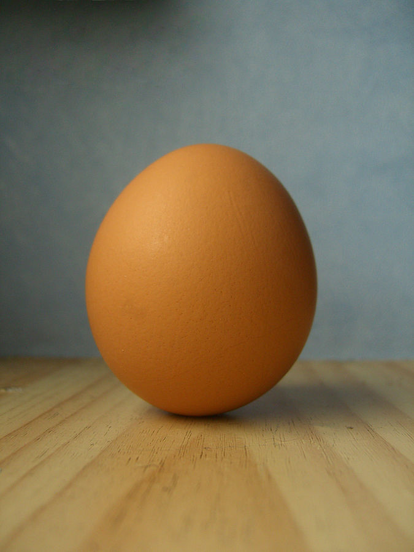

Hard Boiled Egg

Description
Hard boiled eggs are a easy and nutritious meal anyone can prepare. They are yum yum in my tum tum.
Ingredients
Steps
- Put desired number of eggs into a pot.
- Fill pot with water until eggs are almost submerged.
- Bring water to a boil.
- Turn heat to low and cover pot with a lid. Let sit for 5 minutes.
- Turn off heat. Let sit for a while depending on desired egg toughness.